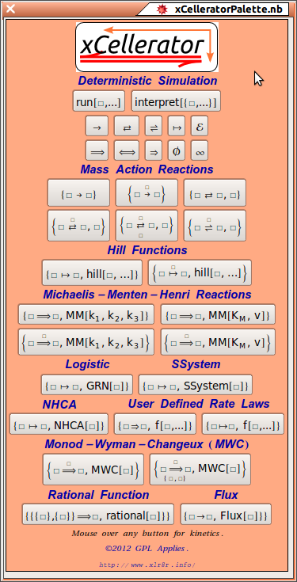
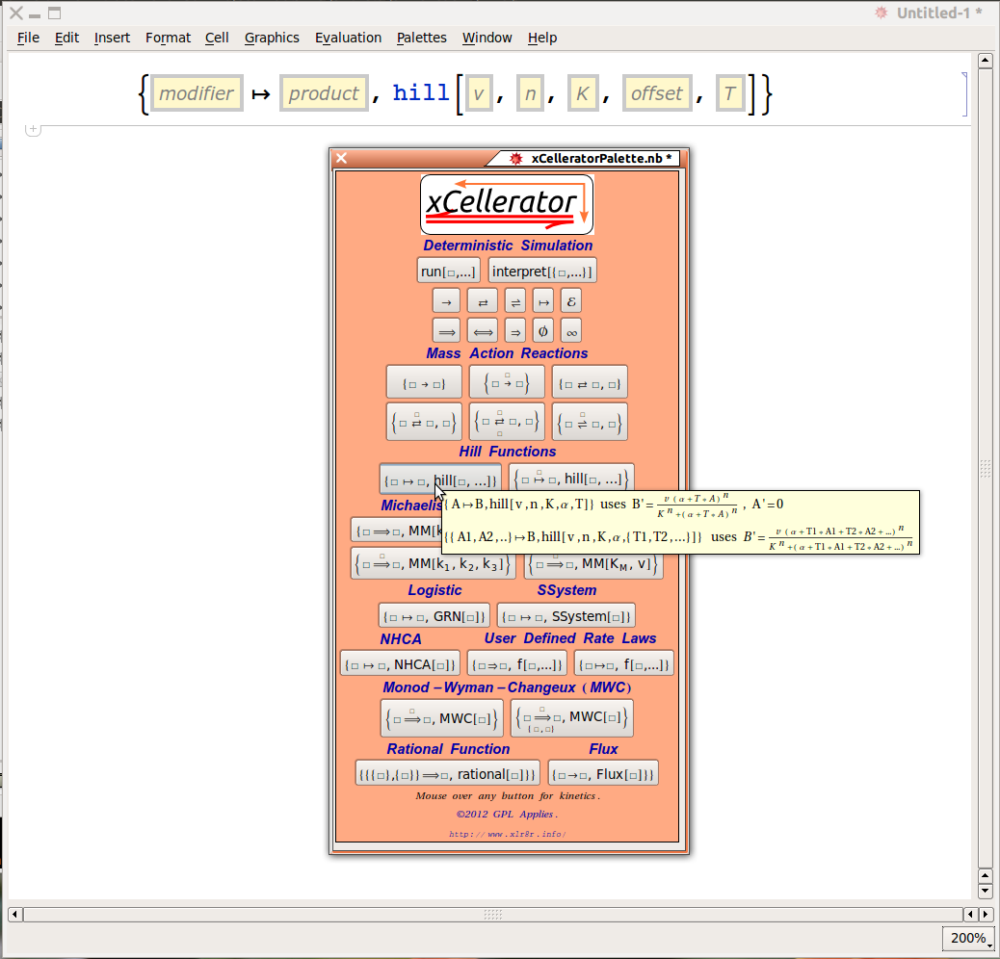

| The xCellerator Palette | Reference Home |
The Palette displays templates for all classes of Cellerator Reactions.

When you mouse over a reaction on the template, a pop-up will display the generic term produced by the interpret command for inclusion in a differential equation.
When you click on a reaction an annotated template for that reaction will be pasted into your working notebook.
